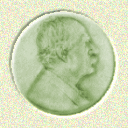
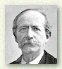
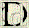
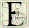
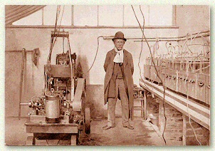
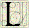
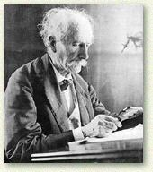

Marcellin BERTHELOT (1827 - 1907)
Homme politique, chimiste, essayiste, historien des sciences


ès le collège, où il réussissait aussi bien en lettres et en philosophie qu'en sciences, Marcellin Berthelot se fit remarquer par son intelligence, son étonnante mémoire et sa puissance de travail. C'est de cette époque que date l'amitié profonde et partagée – qui ne se démentira jamais - avec Ernest Renan, qui ne partageait cependant pas sa confiance dans l'avenir de la science.
 La synthèse de l'alcool méthylique
La synthèse de l'alcool méthylique
 près avoir hésité longtemps sur le choix d'une carrière, Berthelot s'orienta vers la chimie et fréquenta tout d'abord le laboratoire de Jules Pelouze, où il s'initia à l'expérimentation en effectuant un premier travail sur la dilatation des gaz.
près avoir hésité longtemps sur le choix d'une carrière, Berthelot s'orienta vers la chimie et fréquenta tout d'abord le laboratoire de Jules Pelouze, où il s'initia à l'expérimentation en effectuant un premier travail sur la dilatation des gaz.
À 24 ans, il entre au Collège de France comme préparateur de Antoine Jérome Balard. C'est là qu'il réalise la synthèse de l'alcool méthylique, première étape d'une longue suite de synthèses, dont celle de l'acétylène (1863), effectuée à partir de carbone et d'hydrogène sous l'action d'un arc électrique (« œuf électrique de Berthelot »), demeure la plus mémorable. À l'époque de cette synthèse, Berthelot était professeur à l'école de Pharmacie de Paris, ayant soutenu une thèse de doctorat en 1854 et obtenu son diplôme de pharmacien en 1858.
 La chimie organique fondée sur la synthèse
La chimie organique fondée sur la synthèse

n 1865, cinq ans après la parution de son ouvrage fondamental Chimie organique fondée sur la synthèse (1860), on crée pour lui, au Collège de France une chaire consacrée à cette discipline, qu'il devait brillamment illustrer. Par les nombreuses synthèses qu'il a effectuées et la diversité des structures qu'il a obtenues, Berthelot montra la généralisation de l'obtention des molécules organiques sans que l'intervention d'une quelconque «force vitale» soit nécessaire, comme beaucoup le pensaient encore à l'époque.Dans le domaine de la cinétique chimique, c'est vers 1864 qu'avec Péan de Saint‑Gilles il entreprit l'étude méthodique du phénomène de l'estérification, précisant les caractères de cette réaction et soulignant l'importance primordiale de la notion de vitesse de réaction. Il étudia de même les réactions réciproques ou réversibles des mélanges de gaz minéraux et de vapeurs organiques.

Marcellin Berthelot dans son laboratoire
 Une nouvelle discipline: la thermochimie
Une nouvelle discipline: la thermochimie
 côté de ses remarquables travaux de chimie organique, Berthelot fut le promoteur de la thermochimie, réalisant des recherches dans le but de déterminer les affinités qui président aux réactions mutuelles des corps ou qui assurent les équilibres chimiques.
côté de ses remarquables travaux de chimie organique, Berthelot fut le promoteur de la thermochimie, réalisant des recherches dans le but de déterminer les affinités qui président aux réactions mutuelles des corps ou qui assurent les équilibres chimiques.
Pour cela, s'appuyant sur le principe de l'état initial et de l'état final, et sur les multiples déterminations calorimétriques qu'il réalisa sur plus de 20 ans, il montra que les affinités pouvaient être mesurées par la quantité de chaleur qui résulte d'une combinaison, celle-ci ne différant de ses éléments que par la chaleur dégagée ou absorbée. Il appuyait ainsi les conclusions des études de Julius Thomsen pour qui, parmi plusieurs réactions possibles, c'est celle qui dégage le plus de chaleur qui se produit.
Dans son ouvrage Essai de mécanique chimique fondée sur la thermochimie (1879), Berthelot exposa ses recherches dans ce domaine, ainsi que les conclusions qu'il en retirait en chimie biologique. Si les bases théoriques sur lesquelles il s'appuyait étaient malheureusement insuffisantes pour prévoir les réactions chimiques et pour expliquer complètement la question de l'affinité, les expériences de Berthelot ont été le point de départ d'autres travaux sur l'énergétique, et la mesure des chaleurs de réaction, au plan pratique, a rendu des services importants dans le domaine des combustibles et dans celui des explosifs.
 Les autres domaines de recherche
Les autres domaines de recherche

es travaux de Berthelot sur les explosifs sont un complément des précédents et c'est en 1870 que pour les besoins de la défense nationale, il fut conduit à l'étude des poudres de guerre. Avec Paul Vieille, il inventa la poudre sans fumée qui eut une grande répercussion en artillerie. Par ailleurs, dans le laboratoire qu'il avait créé à Meudon, Berthelot s'occupa de chimie agricole, ce qui le conduisit (1885) à constater la fixation de l'azote atmosphérique par les plantes et par les microbes du sol, d'où découle l'emploi des engrais chimiques en culture.Signalons encore les études réalisées avec Jungfleisch sur le coefficient de partage, le pouvoir réfringent spécifique, l'action de l'effluve électrique, l'allotropie, l'origine des pétroles.

 L'œuvre de Berthelot
L'œuvre de Berthelot
'œuvre de Berthelot, considérable, comprend 1600 mémoires ou articles et un nombre important d'ouvrages. Professeur au Collège de France, membre de l'Académie de médecine (1863), de l'Académie des sciences (1873), et de l'Académie française (1901), 5 fois président de la Société chimique de France, Berthelot, fut également un homme politique influent : élu sénateur inamovible en 1881, il devint ministre de l'Instruction publique (1886-1887) et des Affaires étrangères (1895-1896).
Beaucoup ont pu toutefois reprocher à Berthelot, qui s'accrocha à la théorie des « équivalents » et combattit avec acharnement la théorie atomique, d'avoir par là compromis en France l'avancée normale des idées en France étant donné l'influence considérable qu'il exerçait dans les milieux officiels en tant qu'Inspecteur général de l'Enseignement supérieur et membre du Conseil supérieur de l'Instruction publique. L'hostilité de Berthelot à la théorie atomique (qui ne fut introduite que tardivement dans les programmes d'enseignement en France, puisque c'est seulement en 1902 que les définitions de l'atome et de la molécule figurèrent au programme du baccalauréat, alors qu'à cette date ces notions étaient enseignées depuis longtemps en Allemagne ou en Grande‑Bretagne), s'est effectivement révélée préjudiciable au développement de la chimie organique en France, et beaucoup de grands chimistes ont jugé sévèrement l'attitude de Berthelot, déplorant qu'un tel grand savant en soit venu à régenter la chimie. Ainsi, le chimiste suisse Alfred Werner (prix Nobel en 1913), qui avait effectué son stage de post‑doctorat dans le laboratoire de Berthelot, commenta ultérieurement l'influence de ce dernier : « Un tel sectarisme fut plus désastreux pour la France que le traité de Francfort » (traité qui avait conclu la paix entre la France et l'Empire allemand après la défaite de 1870).
Berthelot reste néanmoins un des très grands chimistes du XIXe siècle, tant par la fécondité que par l'immensité de son œuvre scientifique. Il connut une célébrité universelle comparable à celle de Pasteur. Il repose aujourd'hui au Panthéon, à côté de son épouse avec qui il formait un couple profondément uni.


Accueil · Biographie · Livre I · Livre II · Livre III